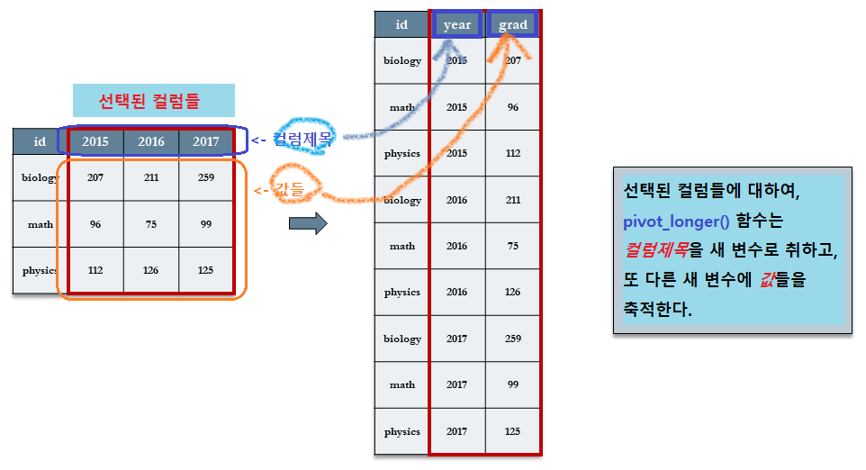
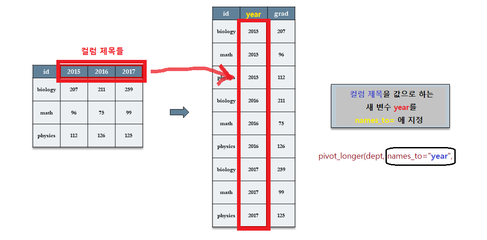
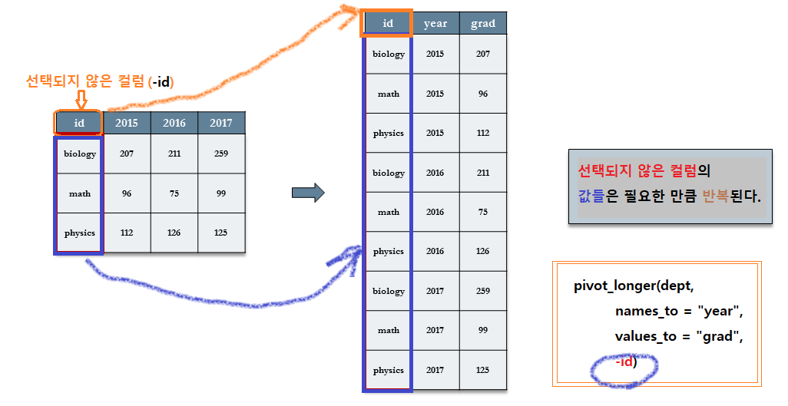
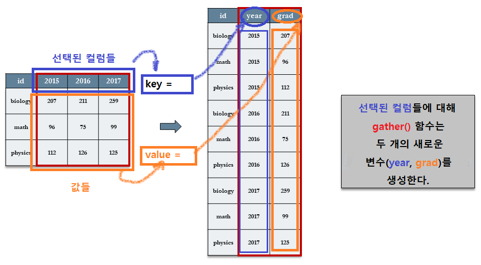
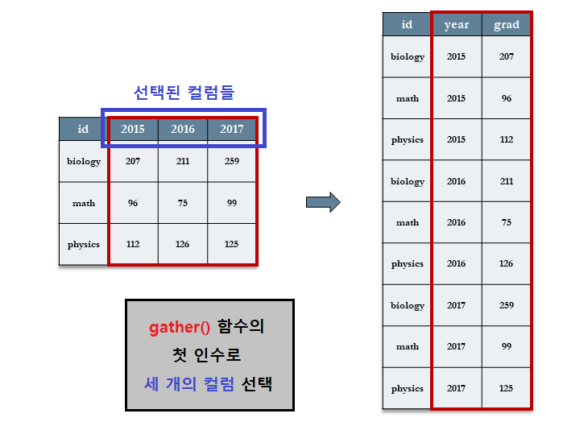
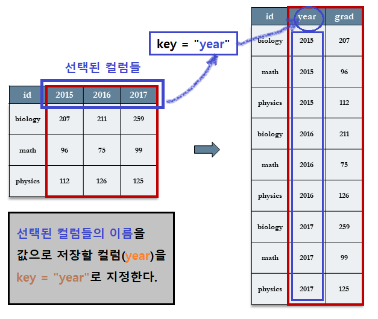
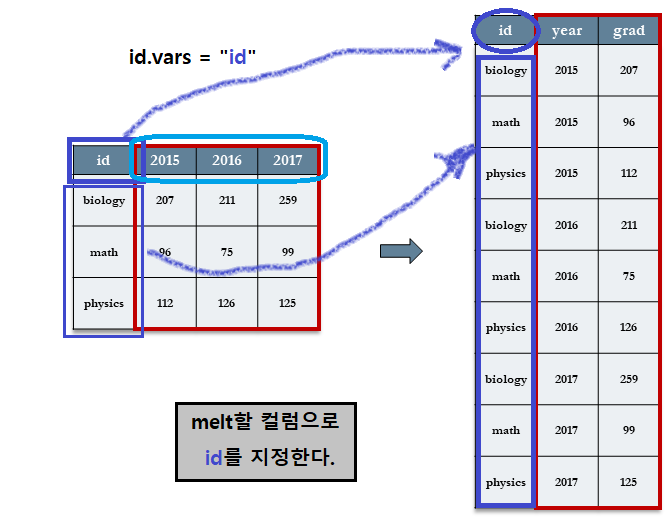
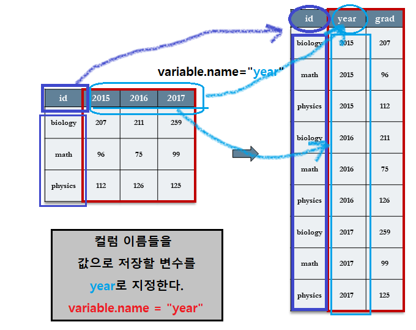
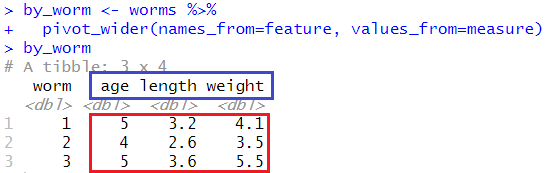
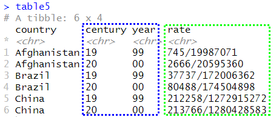

7 Tidy Data
7.1 타이디 데이터 철학
(tidyverse 패키지와 함께 불려와 지는) “타이디(tidy)” 데이터 세트를 생성하는tidyr 패키지에 있는 도구들에 대하여 살펴보기로 한다.
타이디 데이터 세트는 다음과 같은 단순한 구조적 규칙을 준수한다:
- 데이터 세트는 변수(컬럼)과 관측치(행)으로 조직화된 값들의 집합이다.
- 변수는 관측치에 대한 동일 속성을 측정해야한다.
- 관측치는 변수로 측정되는 동일한 단위를 나타내야 한다.
타이디 데이터 관습은 데이터를 조직화해야 할 필요가 있을 때마다 “다시 생각하게 만드는 것을” 피하게 해 주는 표준 조직을 제공한다.
좀 더 적극적으로 데이터를 “타이디”하게 만드는 것은 나중에 더 많은 시간을 절약하게 줄 것이다.
7.1.1 분석의 단위
데이터 센트의 각 행이 분석의 단위(unit of anlysis)를 나타내야 한다. 단위는 대상, 또는 대상 내의 시험 또는 주제의 모든 그룹 등이 될 수 있다.
일부 분석은 개별 단위와 종합된 단위를 설명하는 변수들을 포함할 수 있다. 예를 들어, 학생 수준의 분석은 학교 수준의 변수를 포함할 수 있다.
종단적 연구(longitudinal studies)들은 대상 내에서 그리고 대상 간의 변수들을 포함할 수 있다.
다차원 분석에 대해서는 분석의 단위가 일반적으로 가장 낮은 수준이다.
7.1.2 데이터 세트
patient_pt1_dm.csv 파일을 read_csv() 함수로 불러와서 티블 변수 d에 대입한다.
##
## -- Column specification --------------------------------------------------------
## cols(
## .default = col_double(),
## hospital = col_character(),
## docid = col_character(),
## dis_date = col_character(),
## sex = col_character(),
## familyhx = col_character(),
## smokinghx = col_character(),
## cancerstage = col_character(),
## wbc = col_character()
## )
## i Use `spec()` for the full column specifications.7.1.3 docid 별 그루핑
데이터 세트 d를 docid 로 그루핑하여, by_doc 데이터 세트를 생성한다.
# group_by creates a grouped_df (grouped data frame) class structure
by_doc <- group_by(d, docid)
class(by_doc)## [1] "grouped_df" "tbl_df" "tbl" "data.frame"7.1.4 요약 정보 확인
summarise() 함수를 이용하여 by_doc 데이터 세트의 요약 정보를 확인하고, 그 결과를 변수 pat_summ에 대입한다.
# Create summaries of patients by doctor
pat_summ <- summarise(by_doc,
n_pat = n(), # number of patients
longest_los = max(lengthofstay), # longest length of stay
avg_age = mean(age), # average age
n_stage_four = sum(cancerstage=="IV") # number of stage IV patients
)## `summarise()` ungrouping output (override with `.groups` argument)## # A tibble: 22 x 5
## docid n_pat longest_los avg_age n_stage_four
## <chr> <int> <dbl> <dbl> <int>
## 1 1-1 7 6 52.5 0
## 2 1-100 9 7 86.2 0
## 3 1-11 8 7 51.7 1
## # ... with 19 more rows7.1.5 다중 레벨 데이터 확인
doc_id에 의해 d와 pat_sum을 inner join 해서, 의사별 환자에 대한 다중 레벨의 데이터를 확인한다.
# data at multiple levels - patients nested in doctors
d %>%
inner_join(pat_summ) %>%
select(sex, age, lengthofstay, docid, avg_age, longest_los) %>%
head(n=3)## Joining, by = "docid"## # A tibble: 3 x 6
## sex age lengthofstay docid avg_age longest_los
## <chr> <dbl> <dbl> <chr> <dbl> <dbl>
## 1 male 65.0 6 1-1 52.5 6
## 2 female 53.9 6 1-1 52.5 6
## 3 male 41.4 5 1-1 52.5 67.2 Untidy data
분석가에 의해 수집되지 않은 데이터의 사용은 생각보다 더 untidy data를 자주 대하게 만든다.
데이터는 다양한 방식으로 엉망이 될 수 있지만, tidyr 도구들로 타이디하게 될 수 있는 두 가지 방법에 대하여 살펴보기로 한다:
- 컬럼 제목들은 변수명이 아닌 값이다.
- 복수의 변수들이 하나의 컬럼에 저장되어 있다.
untidy 데이터 세트에 대하여 살펴보고, tidyr 패키지의 pivot_longer() 함수와 pivot_wider() 함수가 어떻게 그것들을 타이디하게 만들어 주는지 살펴보기로 한다.
7.3 컬럼 제목들이 변수 명이 아니고 값들인 경우
3년간 3개의 학과로 부터 졸업생에 대한 데이터(dept1.csv)를 먼저 불러오기로 한다.
계획된 분석은 수년간 졸업자 수가 얼마나 증가했는지를 알아보는 것이다.
여기서 분석의 단위는 특정 년도(2015, 2016, 2017 등)에 있어서 특정 학과의 졸업율이다.
각각의 행은 학과별 해당 년도의 인원을 나타낸다.
7.3.1 데이터 세트
##
## -- Column specification --------------------------------------------------------
## cols(
## id = col_character(),
## `2015` = col_double(),
## `2016` = col_double(),
## `2017` = col_double()
## )## # A tibble: 3 x 4
## id `2015` `2016` `2017`
## <chr> <dbl> <dbl> <dbl>
## 1 biology 207 211 259
## 2 math 96 75 99
## 3 physics 112 126 1252015,2016,2017등의 연도(Year)는 분석의 ‘예측 변수(predictor)’이므로 컬럼 변수가 되어야 한다.- 각 3개 학과들은 3년간의 데이터를 가지고 있으므로, 매 년도마다 3개의 행을 가지고 있다.
- 또한, 전체 값들로 구성되는 테이블은 동일한 값들로 해당 년도에 있어서 해당 학과의 졸업자 수를 측정하고 있다.
- 그러므로, 해당 년도의 값들을 한 컬럼에 넣을 수 있다.
7.3.2 사용할 수 있는 함수의 종류
tidyr패키지의pivot_longer()함수tidyr패키지의gather()함수reshape2패키지의melt()함수
7.3.3 pivot_longer() 함수
pivot_longer() 함수를 사용하기 위해서는, 재구성할 변수의 집합(‘컬럼의 제목’과 ‘값’)을 선택한다:
- 원래 테이블의 컬럼의 제목들은 새로운 테이블의 컬럼 변수가 되고 그 컬럼의 값으로 반복적으로 축적이 된다 (
names_to =) - 원래 테이블의 컬럼 변수에 있는 값들은 새로운 테이블의 단일 컬럼 변수의 값으로 축적이 된다(
values_to =)
이 과정을 “long 형태로 재구성(reshaping)”한다고 말한다.
7.3.3.1 pivot_longer() 함수의 구문
pivot_longer( data, cols, names_to = “name”, names_prefix = NULL, names_sep = NULL, names_pattern = NULL, names_ptypes = list(), names_transform = list(), names_repair = “check_unique”, values_to = “value”, values_drop_na = FALSE, values_ptypes = list(), values_transform = list(), … )
주요 인수 :
data: 피봇할 데이터 프레임names_to ="name": 컬럼 제목을 값으로 유지할 새로운 컬럼 변수 명 (name)values_to = “value”: 데이터 값들을 저장할 새로운 컬럼 변수 명(value)
디폴트 값으로 pivot_longer 함수는 축적되는 모든 컬럼을 선택할 것이다. 그러나 새로운 names_to =에 있는 값들이 변화하지 않는 컬럼들은 축적되지 않아야 한다.
7.3.3.2 pivot_longer() 함수의 사용 예
재구성할 데이터 세트는 다음과 같다:
## # A tibble: 3 x 4
## id `2015` `2016` `2017`
## <chr> <dbl> <dbl> <dbl>
## 1 biology 207 211 259
## 2 math 96 75 99
## 3 physics 112 126 125새롭게 재구성되는 데이터 세트에는 ‘년도(year)’와 ‘졸업율(grad)’ 등의 2 개의 컬럼으로 표시하고 싶다.
- 년도는 원래 데이터의 컬럼 제목이기 때문에,
names_to =인수에 변수명을year로 지정할 것이다.
- 또한
2015,2016그리고2017컬럼에 있는 졸업율의 값들은 또 다른 새로운 변수에 축적이 되어야 하는데 이를values_to =인수로grad변수를 지정하여 저장할 것이다.
학과명(id)은 연도(year)와 상관없이 변함이 없으며 따라서 축적할 필요가 없다.
- 여기서
c(`2015`, `2016`, `2017`)로 압축이 되어야 하는 컬럼에 대해서만 컬럼을 지정하여 재구성을 할 것이며(주의 : 문자로 시작하지 않는 컬럼 명에 대해서는 컬럼 명을 지정할 때 ` 기호가 필요), - 이처럼 압축될 필요가 없는 컬럼에 대해서는 ‘
-’기호 다음에 컬럼을 지정한다.
# the new column "year" uses the column headings as values,
# the new column "graduates" will be the collapsed values
# we do not want to collapse id
dept_by_year <- dept %>%
pivot_longer(names_to="year", values_to="grad", -id)
dept_by_year## # A tibble: 9 x 3
## id year grad
## <chr> <chr> <dbl>
## 1 biology 2015 207
## 2 biology 2016 211
## 3 biology 2017 259
## # ... with 6 more rows7.3.3.3 pivot_longer() 함수의 활용 단계
pivot_longer(names_to="year", values_to="grad", -id)

단계별 분석
7.3.3.3.1 [Step 1]names_to="year" : 컬럼 제목들을 값으로 하는 변수(year) 지정

7.3.3.3.2 [Step 2]values_to="grad" : 데이터 값들을 저장할 변수(grad) 지정

7.3.3.3.3 [Step 3] -id : 선택되지 않는 컬럼 지정. (- 컬럼명)

7.3.4 gather() 함수
gather() 함수를 사용하기 위해서는, 재구성할 변수의 집합(‘컬럼의 제목’과 ‘값’)을 선택한다:
- 원래 테이블의 컬럼의 제목들은 새로운 테이블의 컬럼 변수가 되고 그 컬럼의 값으로 반복적으로 축적이 된다 (
key = "year") - 원래 테이블의 컬럼 변수에 있는 값들은 새로운 테이블의 단일 컬럼 변수의 값으로 축적이 된다(
value =grad)
7.3.4.1 gather() 함수의 구문
gather( data, key = “key”, value = “value”, …, na.rm = FALSE, convert = FALSE, factor_key = FALSE ) 주요 인수
data: 피봇할 데이터 프레임key = “key”: 컬럼 제목을 값으로 유지할 새로운 컬럼 변수 명 (key)value = “value”: 데이터 값들을 저장할 새로운 컬럼 변수 명(value)
df %>% gather("key", "value", x, y, z)는df %>% pivot_longer(c(x, y, z), names_to = "key", values_to = "value")와 같다.
7.3.4.2 gather() 함수의 사용 예
앞의 예를 그대로 이용하기로 한다.
원래의 테이블인 dept에서
- `2015`, `2016`, `2017` 세 개의 컬럼이 새롭게 재구성되는 데이터 세트에서는 ‘년도(
year)’로 - 그리고 이 세 개의 컬럼에 있는 값들은 새로운 테이블의 ‘졸업율(
grad)’ 컬럼의 값으로 표시하고 싶다.
이를 위해,
- 먼저 `2015`, `2016`, `2017` 등의 세 개의 컬럼을 선정한다.
- 이 세 개의 컬럼제목을 값으로 하는 새로운 테이블의 컬럼 이름을 지정한다. (
key = “year”) - 이 세 개의 컬럼에 저장되어 있는 값들을 저장할 새로운 테이블의 컬럼 이름을 지정한다. (
value = “grad”
`2015`, `2016`, `2017` 등이 원래 데이터의 컬럼 제목이기 때문에 key = 인수에 변수명을 year로 지정할 것이다.
또한 2015, 2016 그리고 2017 컬럼에 있는 졸업율의 값들은 또 다른 새로운 변수에 축적이 되어야 하는데 이를 value = 인수로 grad 변수를 지정하여 저장할 것이다.
## # A tibble: 9 x 3
## id year grad
## <chr> <chr> <dbl>
## 1 biology 2015 207
## 2 math 2015 96
## 3 physics 2015 112
## # ... with 6 more rowsyear변수에 `2015`, `2016`, `2017` 등의 컬럼 제목이 값으로 저장됨을 알 수 있다.grad변수에 `2015`, `2016`, `2017` 등의 컬럼 값들이 저장되어 있음을 알 수 있다.
7.3.4.3 gather() 함수의 활용 단계
dept %>% gather(`2015`, `2016`, `2017`, key = “year”, value = “grad”)

- 선택되지 않은 나머지 컬럼(
id)은 그대로 새로운 테이블에 반복적으로 저장되어 있음을 알 수 있다.
단계별 분석
이와 같은 타이디 데이터를 만들려면 해당 열을 새로운 부 변수로 수집(gather)해야 한다. 이 작업은 다음의 세 단계로 이루어진다.
7.3.4.3.1 [Step 1] gather(`2015`, `2016`, `2017`, : 컬럼 제목들 선택
2015, 2016, 2017 등 값으로 되어 있는 컬럼 제목 세 개를 선택한다. 이 때, 선택된 컬럼 제목을 (``, 역 따옴표)안에 기입한다.

7.3.4.3.2 [Step 2] key = "year" : 새로운 테이블의 컬럼 명 지정
선택된 세 개의 컬럼이 새로운 테이블에 저장될 컬럼 명을 지정한다. 여기서는 year로 정하고 있다.

7.3.4.3.3 [Step 3] value = "grad" : 새로운 테이블의 컬럼 명 지정
선택된 세 개의 컬럼이 새로운 테이블에 저장될 컬럼 명을 지정한다. 여기서는 year로 정하고 있다.

7.3.5 melt() 함수
melt() 함수를 사용하기 위해서는, 재구성할 변수의 집합(‘컬럼의 제목’과 ‘값’)을 선택하는 것이 아니고 원래의 테이블에서 사용하고 있는 컬럼 중 새로운 테이블에서도 계속 사용할 컬럼을 지정해 주면 된다.
- id 변수를 지정한다. (
id.vars = “id”) - 원래 테이블의 컬럼의 제목을 저장할 변수를 지정한다(
variable.name = year). - 원래 테이블의 컬럼 변수에 있는 값들을 저장한 새로운 테이블의 컬럼 변수의 이름을 지정한다(
value.name = "grad")
7.3.5.1 reshape2 패키지의 설치
melt() 함수를 사용하기 위해 reshape2 패키지를 설치한다.
7.3.5.2 melt() 함수의 구문
melt( data, id.vars, measure.vars, variable.name = “variable”, …, na.rm = FALSE, value.name = “value”, factorsAsStrings = TRUE )
주요 인수
data: 재구성할 데이터 프레임id.vars:id변수들의 벡터measure.vars: 측정된 변수들의 벡터. 정수(변수의 위치) 또는 문자열(변수명). 빈 칸이면id.vars가 아닌 변수를 사용.variable.name = “variable”: 측정된 변수 명을 저장하는데 사용하는 변수의 이름. 디폴트 값은 “variable”...: 추가적 인수들na.rm: NA 값을 데이터 세트에서 제거할 지 여부value.name ="value": 값들을 저장하기 위해 사용될 변수의 이름. 디폴트 값은 “value”factorsAsStrings: 측정 변수로서 멜트될 때 factor 변수를 문자형으로 변환할 지 여부.
7.3.5.3 melt() 함수의 사용 예
## id year grad
## 1 biology 2015 207
## 2 math 2015 96
## 3 physics 2015 112
## 4 biology 2016 211
## 5 math 2016 75
## 6 physics 2016 126
## 7 biology 2017 259
## 8 math 2017 99
## 9 physics 2017 125
단계별 분석
7.3.5.3.1 [Step 1] id.vars = “id” : id 컬럼을 지정한다.
dept 테이블의 id.vars 컬럼으로 id 컬럼을 지정한다.

7.3.5.3.2 [Step 2] variable.name = “year” : id 컬럼 이외의 컬럼 이름(variable)을 값으로 저장할 변수 지정
dept 테이블의 id 컬럼 이외의 2015, 2016, 2017 컬럼 이름을 값으로 재구성할 컬럼의 이름을 year로 지정한다.

7.3.5.3.3 [Step 3] value.name = “grad” : id 컬럼 이외의 컬럼 값(value)을 저장할 변수 지정
dept 테이블의 id 컬럼 이외의 2015, 2016, 2017 컬럼의 행의 값을 저장할 컬럼의 이름을 grad로 지정한다.

7.4 하나의 컬럼에 복수 개의 변수들이 있는 경우
컬럼들은 한 변수를 나타내는 값들을 담고 있어야 하지만, 종종 복수 개의 변수들이 같은 컬럼에 저장되는 데이터 세트를 종종 접할 때가 있다.
나이(age), 길이(length), 몸무게(weight) 등의 관측치를 한 개의 컬럼에 저장한 곤충(worms)에 대한 데이터 세트를 살펴보기로 한다.
7.4.1 데이터 세트
##
## -- Column specification --------------------------------------------------------
## cols(
## worm = col_double(),
## feature = col_character(),
## measure = col_double()
## )## # A tibble: 9 x 3
## worm feature measure
## <dbl> <chr> <dbl>
## 1 1 age 5
## 2 1 length 3.2
## 3 1 weight 4.1
## # ... with 6 more rows
- 곤충에 대한 분석의 단위로 나이(
age)가 길이(length)와 몸무게(weight)를 예측할 수 있는지 알고 싶다. 따라서 각 행은 한 마리의 곤충에 대한 데이터이다. - 여기서는 특성(
feature) 컬럼에 저장되어 있는 3 종류의 데이터 값(age,length,weight)들을 세 개의 컬럼(age,length,weight)으로 확장하고자 한다.
7.4.2 사용할 수 있는 함수의 종류
tidyr패키지의pivot_wider()함수tidyr패키지의spread()함수reshape2패키지의dcast()함수
7.4.3 pivot_wider() 함수
이 문제는 컬럼의 제목들이 실제로 변수의 값이 되어야 할 문제를 pivot_longer() 함수로 해결하였던 앞의 문제와 반대가 되는 상황이다.
여기서는 age, length, 그리고 weight 값들을 컬럼 제목으로 변환하고자 한다.
이러한 반대가 되는 절차에서는 names_from=에 컬럼 제목으로 전환될 컬럼 변수(기존 데이터의 feature 컬럼)를 지정해주고, values_from=에는 새로운 컬럼으로 확장될 값이 저장되어 있는 컬럼(measure)을 지정해 준다.
이 과정을 “wide 형태로 재구성”한다고 말한다.
7.4.3.1 pivot_wider() 함수의 구문
pivot_wider( data, id_cols = NULL, names_from = name, **names_prefix = "“, names_sep =”_“, names_glue = NULL, names_sort = FALSE, names_repair =”check_unique", values_from = value, values_fill = NULL, values_fn = NULL, … )**
주요 인수 :
data: 데이터 프레임id_cols= NULL :names_from=: 컬럼 제목으로 확장해야 할 값을 갖고 있는 컬럼 변수 명values_from=: 확장된 컬럼의 값들로 채워질 값을 저장하고 있는 컬럼 변수 명
7.4.3.2 pivot_wider() 함수의 사용 예
여기에서, 새롭게 만들어지는 테이블의 컬럼 제목의 일부로 feature 변수에 저장되어 있는 값들을 사용할 것이다.
따라서 이 feature 변수를 names_from=에 지정할 것이다.
또한, measure 컬럼에 있는 값들을 새롭게 만들어진 컬럼의 행으로 채울 것이다.
따라서 measure 변수를 values_from=의 값으로 지정할 것이다.
## # A tibble: 3 x 4
## worm age length weight
## <dbl> <dbl> <dbl> <dbl>
## 1 1 5 3.2 4.1
## 2 2 4 2.6 3.5
## 3 3 5 3.6 5.5
- 원 테이블(
worm)의feature컬럼이 새로운 테이블(by_worm)의age,length그리고weight컬럼으로 확장되었다. - 이 확장된 컬럼들의 값들은 원 테이블의
measure컬럼의 값들로 채워졌음을 알 수 있다.
7.4.3.3 pivot_wider() 함수의 활용 단계
pivot_wider(names_from=feature, values_from=measure)

7.4.4 spread() 함수
spread() 함수는 gather() 함수의 역함수로서 관측변수를 다시 되돌린다. 그리고 나면 데이터 세트를 ‘wide’ 형식으로 펼치게 된다.
앞의 예에서 사용한 long 형태의 worms 데이터 세트를 wide 형태로 펼쳐 보기로 한다.
7.4.4.1 spread() 함수의 구문
spread(data,
key,
value,
fill = NA,
convert = FALSE,
drop = TRUE,
sep = NULL)
주요 인수
data: spread 할 데이터 세트key: 컬럼 명이나 위치value: 값들의 컬럼 명이나 위치
df %>% spread(key, value)는df %>% pivot_wider(names_from = key, values_from = value)와 같다.
7.4.4.2 spread() 함수의 사용 예
## # A tibble: 3 x 4
## worm age length weight
## <dbl> <dbl> <dbl> <dbl>
## 1 1 5 3.2 4.1
## 2 2 4 2.6 3.5
## 3 3 5 3.6 5.5
7.4.4.3 spread() 함수의 활용 단계

7.4.5 dcast() 함수
dcast() 함수는 melt() 함수의 역함수로서 관측변수를 다시 되돌린다. 그리고 나면 데이터 세트를 ‘wide’ 형식으로 펼치게 된다.
앞의 예에서 사용한 long 형태의 worms 데이터 세트를 wide 형태로 펼쳐 보기로 한다.
7.4.5.1 dcast() 함수의 구문
dcast( data, formula, fun.aggregate = NULL, …, margins = NULL, subset = NULL, fill = NULL, drop = TRUE, value.var = guess_value(data) )
주요 인수
data: melt 되어 있는 데이터 프레임formula: 재구성 공식value.var: 값을 저장하고 있는 컬럼 명
7.4.5.2 dcast() 함수의 사용 예
## worm age length weight
## 1 1 5 3.2 4.1
## 2 2 4 2.6 3.5
## 3 3 5 3.6 5.5## Using measure as value column: use value.var to override.## worm age length weight
## 1 1 5 3.2 4.1
## 2 2 4 2.6 3.5
## 3 3 5 3.6 5.57.4.5.3 dcast() 함수의 활용 단계

7.4.5.4 dcast() 함수를 이용한 aggregation
7.4.5.4.1 Chickweight 데이터 세트
Chickweight 데이터 세트를 보면, 578개의 행과 Weight, Time, Chick, Diet라는 4개의 열(Column)로 이루어져 있다.
(? datasets::ChickWeight로 자세한 내용을 확인할 수 있다.)
Weight: 각 Chick(병아리)들의 무게Time: 무게를 잴 때의 병아리 나이(부화한 후의 날 수) 1일~21일Chick: 1~50번까지의 병아리 번호Diet: 병아리에게 투여한 모이 종류 1~4가지
## Grouped Data: weight ~ Time | Chick
## weight Time Chick Diet
## 1 42 0 1 1
## 2 51 2 1 1
## 3 59 4 1 1
## 4 64 6 1 1
## 5 76 8 1 1
## 6 93 10 1 1## Classes 'nfnGroupedData', 'nfGroupedData', 'groupedData' and 'data.frame': 578 obs. of 4 variables:
## $ weight: num 42 51 59 64 76 93 106 125 149 171 ...
## $ Time : num 0 2 4 6 8 10 12 14 16 18 ...
## $ Chick : Ord.factor w/ 50 levels "18"<"16"<"15"<..: 15 15 15 15 15 15 15 15 15 15 ...
## $ Diet : Factor w/ 4 levels "1","2","3","4": 1 1 1 1 1 1 1 1 1 1 ...
## - attr(*, "formula")=Class 'formula' language weight ~ Time | Chick
## .. ..- attr(*, ".Environment")=<environment: R_EmptyEnv>
## - attr(*, "outer")=Class 'formula' language ~Diet
## .. ..- attr(*, ".Environment")=<environment: R_EmptyEnv>
## - attr(*, "labels")=List of 2
## ..$ x: chr "Time"
## ..$ y: chr "Body weight"
## - attr(*, "units")=List of 2
## ..$ x: chr "(days)"
## ..$ y: chr "(gm)"7.4.5.5 melt() 함수의 사용
names(ChickWeight) <- tolower(names(ChickWeight))
chick_m <- melt(ChickWeight, id=2:4, na.rm=TRUE)
head(chick_m)## time chick diet variable value
## 1 0 1 1 weight 42
## 2 2 1 1 weight 51
## 3 4 1 1 weight 59
## 4 6 1 1 weight 64
## 5 8 1 1 weight 76
## 6 10 1 1 weight 93## time chick diet variable value
## 573 12 50 4 weight 155
## 574 14 50 4 weight 175
## 575 16 50 4 weight 205
## 576 18 50 4 weight 234
## 577 20 50 4 weight 264
## 578 21 50 4 weight 2647.4.5.6 dcast() 함수의 사용
## time weight
## 1 0 41.06000
## 2 2 49.22000
## 3 4 59.95918
## 4 6 74.30612
## 5 8 91.24490
## 6 10 107.83673
## 7 12 129.24490
## 8 14 143.81250
## 9 16 168.08511
## 10 18 190.19149
## 11 20 209.71739
## 12 21 218.68889## diet weight
## 1 1 102.6455
## 2 2 122.6167
## 3 3 142.9500
## 4 4 135.2627## 0 2 4 6 8 10 12 14 16
## 1 41.4 47.25 56.47368 66.78947 79.68421 93.05263 108.5263 123.3889 144.6471
## 2 40.7 49.40 59.80000 75.40000 91.70000 108.50000 131.3000 141.9000 164.7000
## 3 40.8 50.40 62.20000 77.90000 98.40000 117.10000 144.4000 164.5000 197.4000
## 4 41.0 51.80 64.50000 83.90000 105.60000 126.00000 151.4000 161.8000 182.0000
## 18 20 21
## 1 158.9412 170.4118 177.7500
## 2 187.7000 205.6000 214.7000
## 3 233.1000 258.9000 270.3000
## 4 202.9000 233.8889 238.5556## diet 0 2 4 6 8 10 12 14
## 1 1 41.4 47.25 56.47368 66.78947 79.68421 93.05263 108.5263 123.3889
## 2 2 40.7 49.40 59.80000 75.40000 91.70000 108.50000 131.3000 141.9000
## 3 3 40.8 50.40 62.20000 77.90000 98.40000 117.10000 144.4000 164.5000
## 4 4 41.0 51.80 64.50000 83.90000 105.60000 126.00000 151.4000 161.8000
## 16 18 20 21
## 1 144.6471 158.9412 170.4118 177.7500
## 2 164.7000 187.7000 205.6000 214.7000
## 3 197.4000 233.1000 258.9000 270.3000
## 4 182.0000 202.9000 233.8889 238.55567.5 하나의 셀에 저장된 여러 변수 또는 여러 셀에 흩어져 있는 한 변수
데이터 세트를 untidy하게 만드는 두 개의 다른 이슈로는 1) 동일한 셀에 여러 개 변수가 저장되어 있는 경우와, 2) 한 변수가 여러 셀에 흩어져 저장되어 있는 경우이다.
tidyr 패키지에 내장되어 있는 table5 데이터는 이 두 문제를 동시에 보여주고 있다.
7.5.1 데이터 세트
## # A tibble: 6 x 4
## country century year rate
## * <chr> <chr> <chr> <chr>
## 1 Afghanistan 19 99 745/19987071
## 2 Afghanistan 20 00 2666/20595360
## 3 Brazil 19 99 37737/172006362
## # ... with 3 more rows
rate변수는 실제cases를populations으로 나눈 식으로 표시되어, 두 개의 변수를 담고 있다.- 또한
century와year라는 두 개의 컬럼으로 분리되어 있는 부분은 사실year변수로 통합될 수 있다.
Data Wrangling with dplyr and tidyr

7.6 separate() 함수와 unite() 함수
컬럼의 분리와 결합을 위한 separate() 함수와 unite() 함수는 서로 보완적인다.
7.6.1 separate() 함수
separate() : 여러 개의 컬럼으로 분리하기 위해 한 컬럼에 있는 각 셀을 분리한다.
separate(data, col, into, sep=, remove = TRUE)
data: 데이터 프레임col: 분리할 컬럼 명into: 새로운 문자형 변수 컬럼 명sep=: 컬럼 사이의 분리 문자remove=: 데이터 프레임에서 원 컬럼의 제거 여부, 디폴트 값은TRUE
7.6.2 unite() 함수
unite(): 한 개의 컬럼으로 결합하기 위해 여러 컬럼에 있는 셀의 값들을 묶어 준다.
unite(data, col, … , sep = “_”, remove = TRUE)
col: 결합 컬럼이 될 새로운 컬럼의 이름...: 결합될 컬럼의 목록sep =: 분리자, 디폴트 값은 “_”
7.6.3 separate() 함수와 unite() 함수의 예
table5 %>%
separate(col=rate, into=c("cases", "population"), sep="/") %>%
unite(col="year", century, year, sep="")## # A tibble: 6 x 4
## country year cases population
## <chr> <chr> <chr> <chr>
## 1 Afghanistan 1999 745 19987071
## 2 Afghanistan 2000 2666 20595360
## 3 Brazil 1999 37737 172006362
## # ... with 3 more rows
table5에 있던century와year컬럼이 새로운 테이블의year컬럼으로 합쳐졌다.table5에 있던rate컬럼이cases컬럼과population컬럼으로 분리되었다.
7.7 tidyverse 참조표
RStudio의 도움말(Help) 메뉴에 tidyverse 패키지가 제공하는 다양한 도구의 활용 방법 및 구문법을 요약해 놓은 “Cheatsheets”에 대한 서브 메뉴가 있다. dplyr과 tidyr의 참조표 와 별도의 ggplot2의 참조표를 발견할 수 있다.

img
References
tidyr 연습문제 - 예제가 좋음 (Python의 Pandas로 처리함)